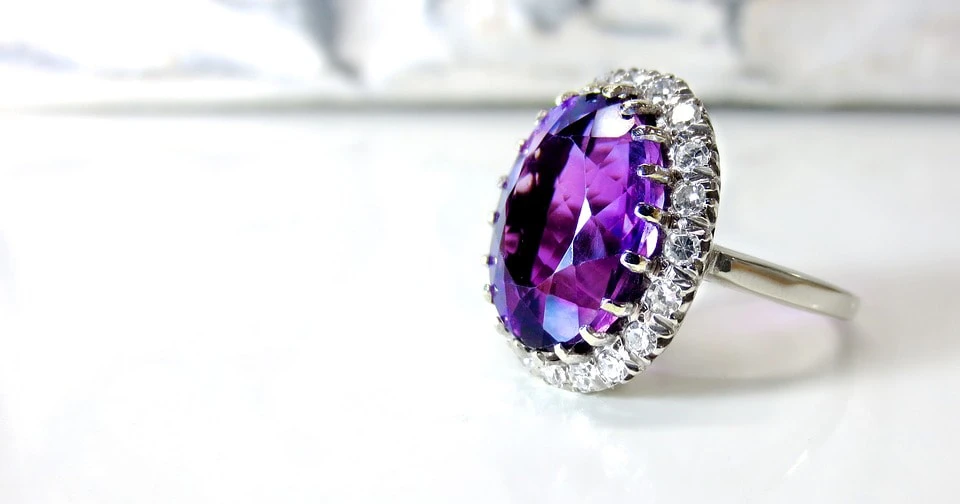

Home Wild life attractions Beaches Activities Heritage locations Hotel details Shop
...Shopping In SriLanka...
...Some Kind Of Souvenirs to Buy in Sri Lanka...
1.Ceylon Tea
2.Gems & Jwellery
...1.Ceylon Tea...

. Ceylon tea is both a brand of tea produced in Sri Lanka and a historical term for tea from that country. Ceylon tea has been described as a pillar of Sri Lankan culture, heritage, and identity, as well as a geographical descriptor. The Lion Logo of Ceylon tea is legally owned by the Sri Lanka Tea Board. Sri Lanka was the world's fourth largest tea producer and third largest tea exporter in 2019. As of 2016, the Lion Logo was registered in 98 countries. Ceylon tea's production costs are rising, owing primarily to rising wages, fuel prices, and utility costs.
. $3.90-$4.30/ Bag 1 Bag(MOQ)
. $1.00-$2.00/ Kilogram 100.0 Kilograms(MOQ)
...2.Gems & Jwellery...
. The gem industry in Sri Lanka has a long and colorful history. Sri Lanka was affectionately referred to as Ratna-Dweepa, which translates to "Gem Island." The name reflects the area's natural wealth. According to Marco Polo, the island possessed the best sapphires, topazes, amethysts, and other gems in the world. According to Ptolemy, a 2nd century astronomer, beryl and sapphire were the mainstays of Sri Lanka's gem industry. Sailors who visited the island brought back "jewels of Serendib," according to records. Serendib was the ancient name given to the island by middle – eastern and Persian traders who crossed the Indian Ocean in the 4th and 5th centuries to trade gems from Sri Lanka to the East.
...Diamond Ring...

. This ruby and diamond halo ring set in 18k white gold will add an exotic touch to your jewelry collection. This stunning ring speaks for its vintage inspiration, with a beautiful ruby in the center of a brilliant diamond halo. Ideal for spicing up your party look.
...RING INFORMATION...
. Metal: 18K White Gold
...CENTER STONE INFORMATION...
. Type: Ruby
...SIDE STONE INFORMATION...
. Type: Diamond
...Stone Pendent...
...PENDANT INFORMATION...
. Metal: 18K Yellow Gold
...STONE INFORMATION...
. Type: Sapphire